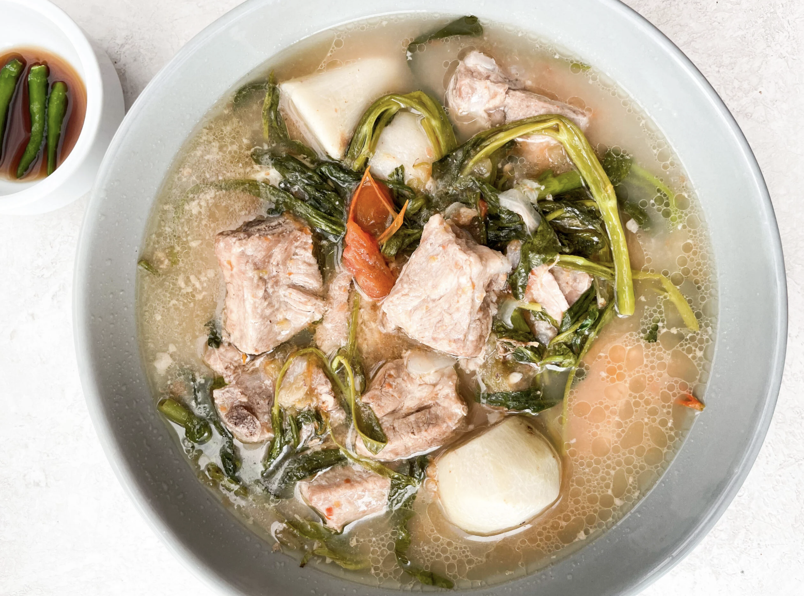

Pork Sinigang

Description
The Filipino dish 'Sinigang' has several variations depending on the type of meat used.
There's Fish Sinigang, Chicken Sinigang, and Pork Sinigang — a personal favorite, to name a few.
Taking a sip of its magical soup will send you to the asim-kilig portals!
Ingredients
- 1 kg pork belly, cubed
- 1 large onion, quartered
- 1 medium ginger, quartered
- 2 medium tomatoes, quartered
- 1 medium radish, sliced
- 1 1.55oz Sinigang sa Sampalok Mix Gabi
- 6 cups of water
- 1 bunch kangkong or bokchoy or spinach
Steps
- In a pot over medium heat, bring the water to a boil.
- Add the onion, ginger, and tomatoes.
- Once the water is boiling, add the pork and cook until tender.
- Stir in the Sinigang mix.
- Add the radish and continue to cook.
- Reduce the heat and simmer for 5 minutes before adding the kangkong, bok choy, or spinach.
Home